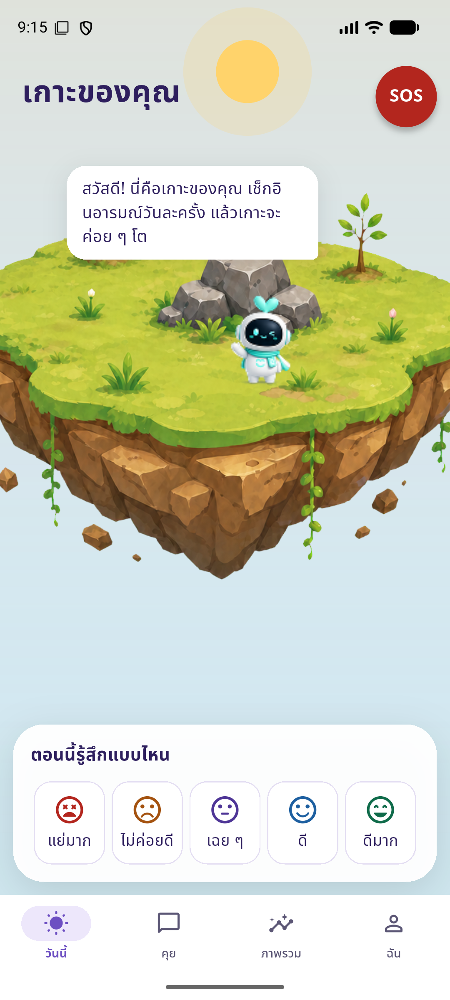
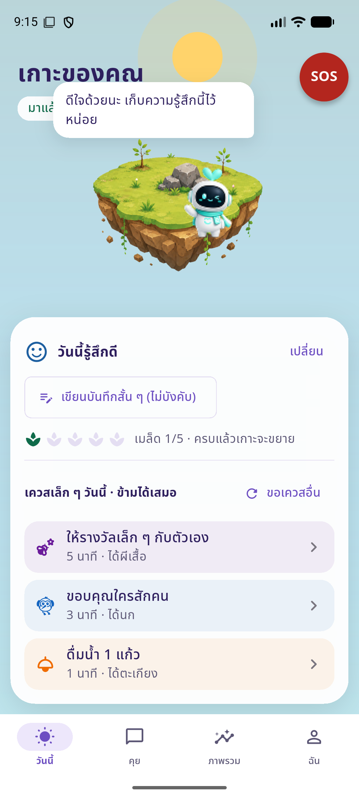
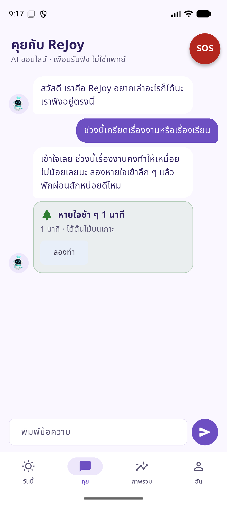
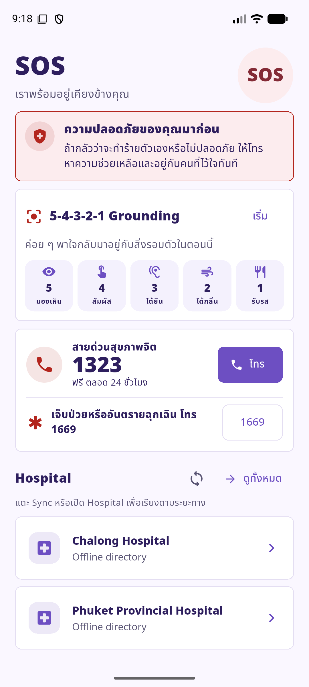
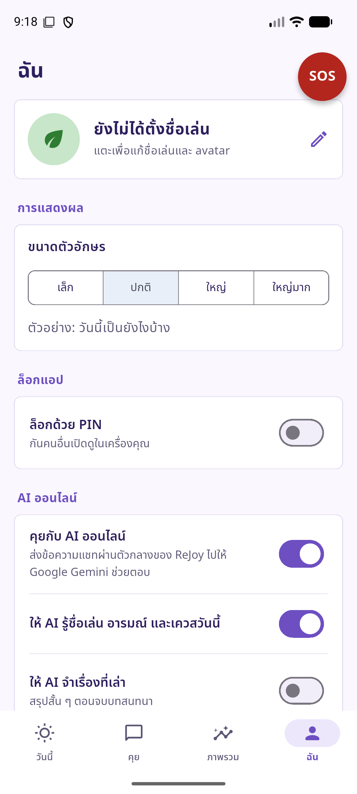

ReJoy
แอปดูแลใจวันละนิด เช็กอินอารมณ์ ทำเควสเล็ก ๆ คุยกับ ReJoy และขอความช่วยเหลือได้ทุกหน้า
เวอร์ชันเว็บใช้ได้ทุกเครื่อง ข้อมูลเก็บในเบราว์เซอร์ (ยังไม่เข้ารหัส) ไม่มีแจ้งเตือนและสแกนนิ้ว ส่วนไฟล์ APK สำหรับ Android 7 ขึ้นไป เข้ารหัสข้อมูลในเครื่อง ติดตั้งแล้วเครื่องอาจถามให้อนุญาต "ติดตั้งแอปที่ไม่รู้จัก" เวอร์ชันทดลองเพื่อการศึกษา ยังไม่มีใน Play Storeสแกนเพื่อเปิดหน้านี้บนมือถือ





ทำอะไรได้บ้าง
- เช็กอินอารมณ์ 5 ระดับ เกาะลอยฟ้าเปลี่ยนสภาพอากาศตามความรู้สึก และโตขึ้นจากการกลับมาดูแลตัวเอง ไม่มีการลงโทษเมื่อหายไป
- เควสเล็ก ๆ ตามอารมณ์ เช่น ฝึกหายใจ ฝึกสติ 5-4-3-2-1 เขียนระบาย ยืดตัว
- แชทกับ ReJoy (AI ออนไลน์ เลือกเปิดเอง) ตรวจความเสี่ยงในเครื่องก่อนทุกข้อความ ถ้าพบสัญญาณอันตรายจะพาไปสายด่วน 1323 ทันที
- ปุ่ม SOS ทุกหน้า รายชื่อโรงพยาบาลใช้ได้แม้ไม่มีอินเทอร์เน็ต
- ข้อมูลเก็บในเครื่องแบบเข้ารหัส ไม่มีบัญชี ล็อกด้วย PIN หรือสแกนนิ้ว ลบข้อมูลทั้งหมดได้ทุกเมื่อ
ReJoy ไม่ใช่แพทย์
ถ้ารู้สึกไม่ปลอดภัยหรือต้องการความช่วยเหลือด่วน โทร 1323 สายด่วนสุขภาพจิต ฟรีตลอด 24 ชั่วโมง หรือ 1669 เมื่อเจ็บป่วยฉุกเฉิน